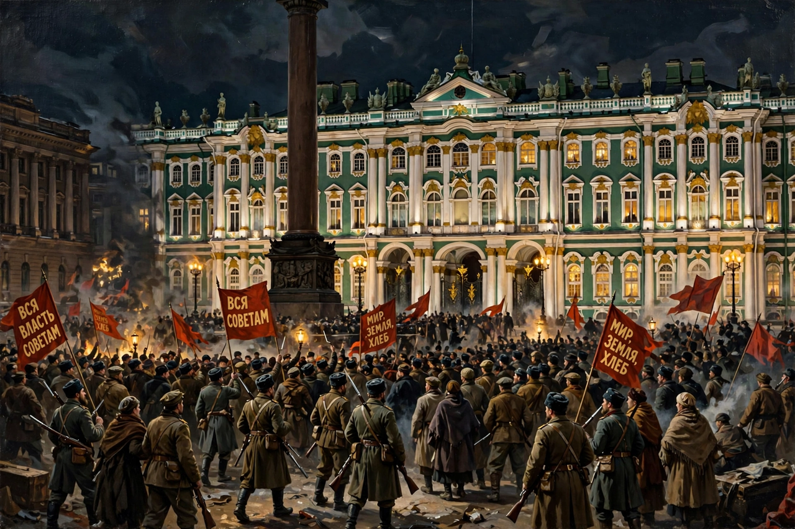

From Wikipedia, the free encyclopedia
| October Revolution | |
 The Winter Palace, seat of the Provisional Government, taken on the night of 25–26 October 1917 | |
| Date | 7 November 1917 (25 October, Old Style) |
| Location | Petrograd, Russian Republic |
| Participants | Bolsheviks, Red Guards, Petrograd Soviet; Provisional Government |
| Outcome | Bolshevik seizure of power; creation of Soviet Russia; start of the Russian Civil War |
| Leaders | Vladimir Lenin; Leon Trotsky; Alexander Kerensky (opposed) |
The October Revolution, also known as the Great October Socialist Revolution in Soviet historiography, or the November Revolution, was a revolution in Russia led by the Bolshevik Party of Vladimir Lenin that is a key moment in the larger Russian Revolution of 1917–1923. It was the second of two revolutions in Russia in 1917. The October Revolution took place with an armed insurrection in Petrograd (modern-day Saint Petersburg) traditionally dated to 25 October 1917 by the Julian calendar then in use in Russia, corresponding to 7 November 1917 in the Gregorian calendar.
The February Revolution had overthrown Tsar Nicholas II and installed a Provisional Government, which continued Russia's participation in the First World War amid economic collapse, food shortages and military disintegration. "Dual power" prevailed between the Provisional Government and the Petrograd Soviet of Workers' and Soldiers' Deputies. The failed July Days uprising and the Kornilov affair in August weakened the government, now led by Alexander Kerensky, and strengthened the Bolsheviks, who won majorities in the Petrograd and Moscow soviets under slogans of "Peace, Land, Bread" and "All Power to the Soviets". Lenin, returned from exile, pressed his party's Central Committee to seize power before the Second All-Russian Congress of Soviets convened.
The uprising was organised by the Military Revolutionary Committee of the Petrograd Soviet, chaired effectively by Leon Trotsky. On 24–25 October (O.S.), Red Guards, soldiers and sailors occupied bridges, railway stations, the telegraph and telephone exchanges, the State Bank and other strategic points in Petrograd with little resistance. The cruiser Aurora fired a blank shot as a signal. On the night of 25–26 October, insurgents entered the Winter Palace, where the Provisional Government's remaining ministers were arrested; Kerensky had fled the capital. The Second Congress of Soviets, opening as the palace fell, proclaimed the transfer of power and adopted Lenin's Decree on Peace and Decree on Land, and formed a Bolshevik government, the Council of People's Commissars (Sovnarkom), chaired by Lenin.
The Bolsheviks extended control over Moscow after a week of fighting and concluded the Treaty of Brest-Litovsk with the Central Powers in March 1918, ending Russia's war at the cost of vast territories. Elections to the Constituent Assembly, in which the Socialist Revolutionaries won a plurality, were dispersed by the Bolsheviks in January 1918. Opposition from "White" armies, foreign intervention and peasant revolts produced the Russian Civil War (1917/1918–1922), from which the Bolsheviks emerged victorious; in December 1922 the Union of Soviet Socialist Republics was formally established.
The October Revolution transformed Russia into the world's first communist state and profoundly shaped 20th-century world politics, inspiring communist movements and parties globally and setting the pattern for the Cold War division of Europe and Asia. Its anniversary, 7 November, was the chief public holiday of the Soviet Union. Historians continue to debate whether the seizure of power was a popular revolution or a coup d'état, and the relative roles of mass support, party organisation and the collapse of the old order.